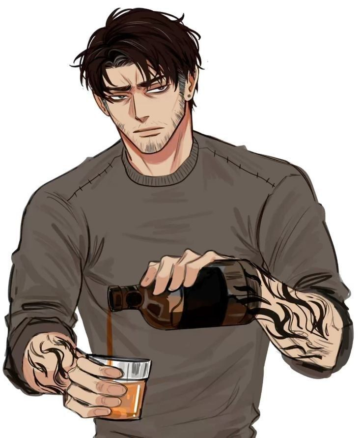

Нил Джостен - главный герой книги. Измученный жизнью в бегах, он должен приспособиться к тому, чтобы быть лисой. Из-за своих столь же поврежденных товарищей по команде и своего появления в центре внимания он оказывается в конфликте со своим стремлением оставаться скрытым и изолированным. В конце концов его любовь к экси оказывается сильнее страха перед отцом. Нил описан как невысокий и атлетически сложенный молодой человек. В первых двух книгах Нил красит волосы в чёрный цвет и носит коричневые контактные линзы, чтобы замаскировать свою личность и слиться с толпой. Волосы у него рыжего цвета, а настоящий цвет глаз – холодный оттенок голубого. Несколько раз отмечалось, что он очень похож на отца, до такой степени, что даже не может смотреть на своё отражение без тошноты. На теле Нила имеются обширные шрамы, полученные в результате жестокого обращения и травм, нанесённых ему отцом, а также во время жизни в бегах. К концу трилогии у него появляются дополнительные шрамы, а также следы ожогов на левой скуле и руках. Его гардероб состоит в основном из поношенных, базовых предметов одежды, таких как футболки, джинсы и кроссовки. У него нет особого чувства стиля, он ценит практичность превыше всего, поэтому выбирает одежду, исходя из её способности скрывать шрамы и делать его незаметным в толпе, становясь "серой тенью". После второй книги Рико заставляет Нила перестать скрывать свой естественный цвет волос и глаз. Он также заставляет Нила сделать татуировку в виде цифры 4 на левой скуле, чтобы соответствовать цифрам (1 - Рико, 2 - Кевин, и 3 - Жан), и в знак того, что он — всё также собственность Рико, часть его свиты. Эту татуировку позже выжгла Лола Малкольм.

Эндрю Джозеф Миньярд - студент факультета уголовного правосудия Университета Пальметто и вратарь Лисов. Он известен своей жестокостью как на поле, так и за его пределами - эта черта характера объясняется его нестабильным воспитанием в приемной семье, пребыванием в центре временного содержания для несовершеннолетних и манией, вызванной назначенными ему судом антидепрессантами. В первой и второй книге под воздействием антидепрессантов Эндрю был непредсказуемым и страдал от зависимости к таблеткам. Он был агрессивным и саркастичным, и достаточно болтливым нежели после реабилитации. Часто старшекурсники отзывались о нем как о психе/социопате. Вскоре после реабилитации и отказа от таблеток можно заметить его настоящий характер. В силу тяжелой жизни с детства, Эндрю стал безэмоциональным, молчаливым и пессимистичным. Он придерживается строгих личных ценностей и полностью защищает людей, о которых заботится: своего брата-близнеца Аарона, кузена Ники, близкого человека Нила и некоторых других, которых он считает достойными. Несмотря на эти чувства, внешне он практически не заботится о собственной жизни. Книги «Всё Ради Игры» прослеживают путь его резкого роста и развития вместе с развитием Нила.Канонически, у Эндрю маниакальная депрессия или, по-другому, биполярное аффективное расстройство. Причем глубоких спадов у него больше, чем подъемов. Но, несмотря на тяжелый характер, Эндрю любит милые игрушки, которые помогают ему успокоиться и отвлечься от жестокой жизни.

Кевин Дэй — знаменитость, второй номер ”Свиты короля“ и бывший Ворон, перешедший к Лисам после того, как его левая рука была сломана. На левой скуле у него была вытатуирована цифра 2. В детстве он писал номер перманентным маркером и повторял его, когда он тускнел. Рико делал то же самое, но с номером 1. Позже в серии он перекрывает его шахматной фигурой ферзя. Это потому, что ферзь - самая опасная и могущественная фигура, несмотря на то, что она менее "важна", чем король, так же как люди относились к Кевину по сравнению с Рико, "Королем". На левой руке Кевина видны шрамы от перелома. У Кевина зелёные глаза, как у матери, и темные волосы. Его считают красивым.
Рико Морияма — главный антагонист цикла. Он был капитаном Воронов. Обычно его называли Сыном экси, как и его сводного брата Кевина Дэя, так как дядя Рико, Тэцудзи, и мать Кевина, Кейли, придумали данный вид спорта. Так как Рико родился позднее своего брата Ичиро, его отнесли к второстепенной линии семейства Морияма. Он был передан на воспитание своему дяде Тэцудзи Морияма в замок Эвермор. После смерти Кейли Дэй Морияма забрали её сына - Кевина Дэя. Мальчик жил и рос бок о бок с Рико до его побега к Лисам. Поскольку Тэцудзи был занят, они проводили все свое время с командой и считались её неофициальными талисманами, маскотами. Вся их жизнь состояла из игры в экси — у них даже были личные репетиторы, чтобы не уходить со стадиона в школу. Кевин и Рико были неразлучны, оба выросли перед камерами. Это привело to тому, что они практически стали навязчивой идеей. Многие считали их будущим экси.
Ники Хэммик — двоюродный брат Эндрю и Аарона. Он не в хороших отношениях со своими родителями, которые отказываются принимать его ориентацию, и из-за этого он год учился в Германии. Находясь там, он встретил Эрика, который был частью его "принимающей семьи". В конце концов, у него начались серьезные отношения с Эриком, которые он продолжал даже после того, как вернулся в Америку и поступил в колледж. У Ники смуглая кожа и тёмные глаза, и он довольно высокий. Он совсем не похож на своих двоюродных братьев. Ники ведет себя весело и счастливо. Он легко расстраивается из-за трагедий, которые переживают многие его товарищи по команде во время истории. Он пытается наладить общение со всей командой, хотя большую часть времени он все же проводит с "монстрами" (Эндрю, Аарон, Кевин и позже Нил). Нил отмечает, что личность Ники, вероятно, более сдержана, чем он обычно показывает, но он изображает себя громким, оптимистичным и экстравертированным, чтобы компенсировать закрытость близнецов.

Жан Моро — третий номер “Свиты короля”, друг Кевина Дэя и один из главных героев книги «Солнечный корт». Он француз и использует родной язык в разговоре с Кевином и Натаниэлем. Жан имеет светлую кожу и немного выше Кевина. У него чёрные волосы и серые глаза. На левой скуле Жана вытатуирована цифра 3 — символ его принадлежности к "Свите короля". Пальцы Жана покрыты шрамами и слегка деформированы из-за того, что 6 из них были сломаны во время учёбы в университете Эдгара Аллана. К концу Свиты короля у него, вероятно, также немного кривой нос из-за того, что Рико сломал его. У него также есть различные рубцы на подбородке и щеках от этого нападения. У Жана отсутствует часть скальпа в районе виска. Пока неясно, кто именно нанёс ему такое ранение — Рико, Тэцудзи или другие Вороны.
Брат-близнец Эндрю, которого часто называют «нормальным». Аарон учится в университете Пальметто и играет в экси на позиции защитника Лисов вместе с Мэттом. Аарон и Эндрю - близнецы со светлыми волосами и светло-карими глазами. Их рост составляет 5 футов. Только Рене, Кейтлин и Нил могут различить близнецов, когда они меняются местами. Аарон и Эндрю были разлучены в младенчестве. Первоначально Тильда, мать близнецов, сдала в детский дом обоих, однако после вернулась — она забрала лишь Аарона. Мать избивала Аарона, была с ним жестока. Из-за неё он начал употреблять наркотики в старших классах. Благодаря стечению обстоятельств — офицеру Хиггинсу, спутавшему Аарона с Эндрю — и настойчивости отца Ники, их дяде, они воссоединились и стали жить с матерью. Хиггинс спутал Аарона с Эндрю и решил, что Тильда — приемная мать Аарона, а мальчишки были разлучены системой опеки. Когда Аарон узнал о существовании брата-близнеца, он отправил Эндрю письмо. Эндрю ответил ему «Пошел на хуй». После этого, Аарон не пытался с ним связаться, да и вовсе расхотел знакомиться с братом. Однако они всё же встретились, когда Эндрю загремел в колонию для несовершеннолетих. Лютер встретился с ним первым, а после и привёл Аарона знакомиться с братом. Выйдя из колонии, Эндрю стал жить с Тильдой — Лютер заставил её забрать Эндрю к себе. Аарон с Эндрю заключили сделку, что будут защищать друг друга — она привела к тому, что Эндрю устроил автоаварию и убил Тильду, как только он узнал, что Тильда избивала Аарона. Тогда близнецам было шестнадцать. К тому же, узнав про наркозависимость Аарона, Эндрю запер его в ванной, пока у того не прошла ломка, чтобы он «очистился». Узнав о смерти тёти, Ники вернулся из Германии в Америку, чтобы заботиться о близнецах пока те не закончат учится, стал их опекуном. В итоге двоюродные братья получают стипендию для поступления в университет Пальметто.

Рене Уокер — одна из двух вратарей Лисов. В 10 лет попала в банду, где её, по традиции, изнасиловали 8 мужчин, а позже один из них продолжил проявлять к ней своеобразное внимание (об этом упоминалось в доп.материалах "Последнее дыхание"). В банде она медленно продвигалась по иерархии. Затем сильно поругалась с тем самым мужчиной, который напал на неё. Усиленно тренировалась, чтобы отомстить ему за все, что он с ней делал, именно поэтому она научилась драться на ножах, ведь тот мужчина любил причинять ей ими боль. В итоге убила его. Когда об этом узнал главарь банды, он поднял ее статус, а смерть мужчины списал на другую преступную группу. После того, как полиция поймала девушку за приемом наркотиков, она играла в Экси в качестве «отдушины». Рене — девушка с достаточно миловидной внешностью. Последние два дюйма волос окрашены в пастельные цвета, волосы подстрижены под каре. Одевается максимально женственно и практически не красится. Является самым старшим членом Лисов (после смерти Сета). Также у неё на спине есть тату с крыльями, которые изначально планировались как ангельские, но в итоге, из-за непрофесионализма мастера в банде, вышли похожими на драконьи. Сама Рене считает это довольно символическим и ироничным. У Рене есть приемная мать. Именно она показала Рене католичество и экси. Девушки очень любят друг друга и находятся в хороших отношениях. На одном из матчей, где команда Рене играла против команды Дэн (которая позже так же станет капитаном команды), их заметил тренер Ваймак. Так «соперницы» попали к Лисам. Вначале их не приняли из-за половой принадлежности, потому девушки сдружились. Но потом они стали неотъемлемой частью Лисов.

Даниэль Ли "Дэн" Уайлдс - капитан Лисов и студентка 4-го курса Университета Пальметто. Она очень любит Лисов и не терпит, когда её товарищи по команде говорят о ней (о команде) что-то плохое. Её каштановые волосы подстрижены "безжалостно обкорнанны". Глаза карие. Она немного выше Нила. Дэн вспыльчива и непреклонна в соблюдении установленных ею правил. Она хочет, чтобы команда функционировала (или, по крайней мере, не убивала друг друга), и полностью выполняет свою роль капитана. Она старается вовлечь всех в командную деятельность. Как и другие члены команды, Дэн любит участвовать в ставках. Дэн специализируется в области атлетической подготовки и тренерского дела. В старших классах школы Дэн работала стриптизершей, чтобы иметь возможность оплачивать своё существование как таково. Её сценическим псевдонимом в тот момент — Хеннесси, в честь одноименного крепкого алкоголя. Её коллеги по стриптизу стали для неё семьей, и она называет их своими "сёстрами". У Дэн было поддельное удостоверение личности, подтверждающее, что ей уже исполнилось восемнадцать лет, что и позволяло ей работать в стриптиз-клубе. Она жила в передвижном доме со своей тётей, которую она называет по имени — Кэти, и её детьми. У Кэти было много "ухажеров", поэтому, когда Дэн впервые встречает тренера Ваймака, она сначала предполагает, что он ищет отношений с её матерью, а когда он поясняет, что пришел ради неё, отвечает: «Ты настоящий гад, да? Не знаю, какого хрена она тебе предложила, но...» До прихода Ваймака Дэн не надеялась играть в экси в университете, потому что ей сказали, что женщин в команды не берут. Ваймак увидел её игру случайно: приемная мать Рене (журналистка) пригласила его посмотреть одну из игр Рене. Дэн тогда играла против её команды.

Элисон Рейнольдс —полузащитница Лисов. Она бывшая наследница чрезвычайно
богатой семьи Рейнольдс. После того как она предпочла играть в экси, а не продолжать
семейный бизнес, от неё отреклись и лишили семейного состояния. Её семья владеет
сетью курортов и их состояние насчитывает миллиарды долларов. Элисон очень гордится
своей внешностью и, как известно, часами готовится перед выходом. У неё длинные
платиновые светлые волосы, которые она обычно завивает. Известно, что она безупречно
красится, а её гардероб полностью состоит из дизайнерских вещей и брендов. Элисон
гордая и волевая. Она не боится разбрасываться деньгами. Неоднозначный персонаж,
язвительная и несгибаемая, но в душе добрая. Помогала Нилу скрывать синяки после
нападения Лолы. Любит скандалы.
Сет и Элисон никогда не встречались дольше нескольких месяцев. Впервые они переспали
после того, как побывали на вечеринке студенческого братства за пределами кампуса.
Элисон слишком напилась, и Сет спас её от сексуального насилия. Он отнес её домой к
соседям по комнате. Для неё было неожиданностью увидеть Сета с такой, хорошей
стороны. Её отношения с Сетом непостоянны. Когда они вместе, всё хорошо, но когда
нет, они словно стараются только усугубить ситуацию и лишний раз провоцируют друг
друга. Когда они ссорятся, Элисон тусит со своими подругами. После смерти Сета
Элисон получила его прах. В итоге она установила его урну в фонтане у своего дома
и иногда ходит к нему в гости, чтобы поговорить - обычно в порыве гнева.
На протяжении всей трилогии Рене и Элисон близки. После того как Элисон подвергается
нападению Эндрю, Рене говорит ему: «Отдай её мне». Также показано, что они выбирают
друг друга, а не больше пустого пространства в автобусе команды. Нора Сакавич
подтвердила, что они не испытывают друг к другу никаких чувств.

В самом начале серии Сет - единственный оставшийся член первоначального
состава Лисов Пальметто. Он нападающий, самый старший среди всех Лисов, учится на
пятом курсе по специальности "Управление парками, отдыхом и туризмом" и известен
своим плохим поведением и непостоянными отношениями с полузащитницей команды Элисон
Рейнольдс. Сет не любит остальных членов команды и явно это демонстрирует.
Он - сосед Нила по комнате, и его первое появление отмечено ироничным обвинением в
том, что у Нила "проблемы в общении" и он не хочет с ним разговаривать, пока тот не
сможет забить Эндрю.
Сет и Элисон никогда не встречались дольше нескольких месяцев. Впервые они переспали
после того, как побывали на вечеринке студенческого братства за пределами кампуса.
Элисон слишком напилась, и Сет спас её от сексуального насилия. Он отнес её домой к
соседям по комнате. Для неё было неожиданностью увидеть Сета с такой, хорошей
стороны. Его отношения с Элисон непостоянны. Когда они вместе, всё хорошо, но когда
нет, они словно стараются только усугубить ситуацию и лишний раз провоцируют друг
друга. Когда они ссорятся, Сет обычно проводит время с Мэттом. После смерти Сета
Элисон получила его прах. В итоге она установила его урну в фонтане у своего дома и
иногда ходит к нему в гости, чтобы поговорить - обычно в порыве гнева.
Сет ненавидит то, что слава делает с людьми, особенно с Кевином, и утверждает, что
он не стоит меньше него только потому, что он менее талантлив. Он хочет стать
профессиональным игроком в экси, но считает, что никто не будет брать в
профессиональную команду выходцев из Лисов, потому что они - посмешище всей страны.
Потому он не старается быть более человечным, чтобы понравиться фанатам Лисов - он
не видит в этом смысла. Сет получил травму во время первой игры сезона, когда
опекающий его защитник из команды противников, "Горилла", впечатал его в стену
корта. До момента смерти Сет учился по специальности
"Управление парками, отдыхом и туризмом".

Мэтт является защитником Лисов. Он учится на третьем курсе. В основном
он общается с Нилом, Элисон, Рене и своей девушкой Дэн. Мэтт укладывает волосы гелем
в виде коротких шипов. На обеих руках у него
«бледные, но безошибочно узнаваемые следы», оставшиеся после употребления
инъекционных наркотиков («Лисья Нора», глава 5). Мать Мэтта, Рэнди, —
профессиональный боксер. Его отец, Дональд, — врач. Когда Мэтт был ещё маленьким,
они разошлись, и Мэтт жил с отцом из-за ненормированного рабочего графика Рэнди.
В отсутствие Рэнди Дональд стал впадать во все более разгульные вечеринки и
призывал юного Мэтта присоединиться к пьянству и употреблению наркотиков.
У Мэтта развилась зависимость от кокаина и героина, о чем позже узнала Рэнди
и помогла ему реабилитироваться. За это время они становятся очень близки,
и она приобщает его к боксу и экси в качестве альтернативы веществам.
В Пальметто Мэтту вновь становится тяжело оставаться «чистым». Тогда Рэнди
соглашается на помощь Эндрю, чтобы «вылечить» зависимость Мэтта, и снова берет
отпуск на работе, чтобы помочь сыну оправиться (см. раздел Лисы).
(Примечание: когда отец Мэтта впервые увидел Нила в Свите Короля, тот упомянул,
что знает пластического хирурга)

Тренер Лисов и отец Кевина. Ваймак - крупный мужчина с татуировками в
виде пламени. У него карие глаза, и он часто носит белую кофту и джинсы.
Ваймак был другом Кейли Дэй. Секс у них был единожды и именно во время него был
зачат Кевин. Кейли научила Ваймака играть в экси. После её смерти Ваймак
поддерживает с Кевином контакт, несмотря на то, что он не знает, что Кевин — его сын.
Пару лет назад он повредил тазобедренный сустав и ему были выписаны обезболивающие
медикаменты. Во время своей терапии он познакомился с Эбби и даже смог найти ей
работу в качестве медсестры для Лисов. Команда разделяется во мнении где-то 50 на
50 — кто-то считает, что между ними что-то есть, а кто-то, напротив, нет. Тренер
Ваймак основал Лисов, чтобы дать людям из трудных семей ещё один шанс. Вопреки
распространенному мнению, это не пиар-ход. За это Ваймака считают идеалистом.
Чтобы обеспечить безопасность своих игроков, он выходит за границы того, что должен
делать тренер, и даже временно поселяет некоторых игроков в своей квартире или
квартире Эбби. Он опекает их и предлагает помощь Нилу, если кузены и Кевин создают
слишком много проблем, но в основном не вмешивается в личные дела команды.
На зимнем банкете экси, за год до событий основной трилогии, Кевин отправился в
гостиничный номер к Ваймаку, когда сломал руку. Он попросил Эбби вправить ему
руку и привез его с собой в Пальметто. Ваймак позволяет Лисам самим определять
свою иерархию. Вместо того чтобы вмешиваться в их драки, он лишь назначает им
более изнурительные тренировки в качестве наказания уже после. Чтобы заставить
команду вести себя хорошо, он угрожает им пробежать круг или даже целый марафон.
Иногда он также угрожает оставить членов команды, если они будут медлить, например,
с посадкой в автобус, но это просто пустые угрозы, и все это знают. Ваймак
постоянно говорит членам своей команды, чтобы они не перенапрягались на площадке,
особенно если они травмированы. Он скорее проиграет игру, чем выведет игрока из
строя на будущие матчи.
Командный медик Лисов. Она училась в школе в Чарлстоне вместе с Бетси.
После окончания школы они продолжали общаться. Она решительна, ей не составляет
труда заставить людей замолчать или приказать им. Эбби не одобряет, что Эндрю
употребляет алкоголь в то время, как принимает препараты, и считает Ники
ответственным за соблюдение этого правила. Она грозится лишить Эндрю права посещать
корт, если они нарушат Нил в течение лета. Она также не одобряет то, что Эндрю
сделал с Мэттом и Дэн годом ранее. Несмотря на её заверения, она шокирована шрамами
Нила. Дом Эбби находится в 5 минутах езды от кампуса. Это одноэтажный дом с
подъездной дорожкой, на которой могут поместиться две машины. У нее достаточно
места, чтобы разместить на лето Эндрю, Аарона, Ники и Кевина.

Психиатр Лисов. Она находится в хороших отношениях с Эндрю. Команда
обязана посещать её раз в семестр, но так же может посещать её в любое время,
когда считает нужным. Это входит в стоимость обучения Лисов. У Бетси бледно-
каштановые волосы до подбородка. У нее "несколько лишних изгибов" и морщинки
смеха на лице. Она носит очки в узкой оправе. Бетси ходила в школу в Чарлстоне.
Раньше Бетси работала в колонии для несовершеннолетних, но перевелась в
Университет Пальметто. Там она отвечает за наблюдение за самоубийцами и
экстремальными случаями психических заболеваний. Бетси любит какао и пьет его
во время сеансов, независимо от температуры на улице. Эбби пригласила её на
ужин в первый вечер приезда Нила в город, но она отказалась, заявив, что это
будет неловко. Бетси страдает обсессивно-компульсивным расстройством, и в её
кабинете царит точный порядок. Она разрешает своим пациентам называть её как
угодно - от «Бетси» до «Док» и «Эй вы». Бетси дружит с Дэвидом Ваймаком и
называет его по имени. Она училась в школе вместе с Эбби и продолжала общаться
с ней после окончания школы, так она и познакомилась с Ваймаком. Нил не доверяет
ей из-за ее профессии. Он считает, что она умна и поэтому опасна для него.
К недоумению Нила, она нравится Эндрю. Команде в целом нравится Бетси и Ники
считает её «потрясающей».

Тэцудзи Морияма — тренер Воронов. Он и Кейли Дэй изобрели экси 30 лет
назад во время учебы в Фукуи, Япония. После смерти Кейли он взял Кевина к себе на
попечительство, чтобы воспитывать его вместе с Рико. Он не усыновил Кевина, а
передал его Рико в качестве собственности. Из-за того, сколько денег и времени
было вложено в Кевина, Тэцудзи присваивает своей семье весь его заработок.
Тэцудзи — глава филиальной ветви семьи Морияма. Его брат, Кенго, возглавляет
основную ветвь и их криминальную империю, но поскольку сам Тэцудзи не был
первенцем, его не причисляют к этой ветви семьи. Это отстранило его от участия
в семейном бизнесе, но дало ему возможность учиться в Японии и сделать Воронов
лучшей командой страны по игре в экси. Тэцудзи поручил Воронам сменить округ,
чтобы заработать на статусе Кевина как чемпиона экси, насколько это будет
возможно. Он планировал столкнуть его с Рико, чтобы окончательно доказать,
что Рико — лучший игрок. Вороны называют его «Хозяин».

Ичиро Морияма - первенец Кенго Мориямы и наследник преступной империи
Морияма. Он принадлежит к основной ветви семьи Морияма. Он знал свою мать несколько
лет, так как он примерно на 5 лет старше Рико, и их мать была убита вскоре после
рождения его брата. У Ичиро и Нила чисто деловые отношения. Ичиро улетает, чтобы
встретиться с Нилом и оценить, представляет ли он угрозу для семейного бизнеса
Мориямы, поскольку он - свободный конец, оставшийся после смерти отца Нила, Мясника.
В конце концов, он решает оставить Нила в живых, требуя, чтобы Нил отдавал 80%
своего заработка через Экси до конца своей жизни семье Морияма. Через Нила он
осуществляет аналогичные договоренности с Кевином и Жаном, которые также были
ценными активами.

Натан Веснински был отцом Нила. Он был преступником, находящимся в
Балтиморе, известным как "Балтиморский мясник". Натан тайно работал на семью Морияма
и был правой рукой Кенго. Его территория - восточные порты, его западная граница -
Западная Вирджиния. Натан Веснински был женат на Мэри Хэтфорд. После того, как его
сын посетил практику у Воронов и Тэцудзи одобрил Натаниэля, она украла 5 миллионов
долларов и сбежала с ним. Мясник гнался за ними 8 лет, пока Мэри не была смертельно
ранена его подчинёнными и не умерла, а после гнался за Нилом до самой своей смерти.
Был убит Стюартом Хэтфордом, родной брат Мэри.
Стюарт Хэтфорд является дядей Нила и братом Мэри. Он - выходец из британской
преступной семьи, и его разыскивает полиция. Стюарт объединяется с ФБР, чтобы
уничтожить Натана. Его команда прерывает сеанс пыток Натана и Лолы. Они отодвигают
Нила в угол, чтобы он не мешал, и подают сигнал Стюарту, чтобы тот вошел после того,
как они обезвредят Натана. Стюарт, удивленный появлением и присутствием Нила,
спрашивает, где Мэри, и "выражение его лица застывает, проблеск надежды исчезает
так же быстро, как и появился", когда Нил сообщает ему, что она умерла. Стюарт
убивает Натана и передает Нила в руки ФБР, сказав, что Нилу нужна медицинская
помощь и он не может идти туда, куда идет. Он обещает вернуться за ним, когда это
будет возможно. Стюарт использует смерть Натана, чтобы заключить перемирие между
своей преступной семьей и Мориямами.
Джереми Нокс — капитан Троянцев и один из главных героев книг Солнечный корт
и Золотой Ворон. Он также второй старший сын Трента Нокса и Матильды Уилшир.
Он получил должность капитана команды на третьем курсе. Джереми — энтузиаст и само
дружелюбие. Его легко развеселить, но он серьёзно относится к своей роли капитана и
к матчам. Он очень хороший спортсмен, которому гораздо интереснее стараться изо всех
сил, вести честную борьбу и совершенствовать себя и свою команду, нежели просто
сохранять свое звание или побеждать любой ценой. Он очень заботлив и проявляет
внимание к здоровью, как физическому, так и психологическому всех членов своей
команды. Джереми не любит заставлять других чувствовать себя дискомфортно или
небезопасно в его компании и просит говорить ему, если что-то не так. Он также
соблюдает чужие личные границы, хоть и тактилен. Ранее, в подростковые годы и
до посещения психотерапевта, Джереми был иным. Коди также упомянули, что Джереми
был «не тем парнем, с которыми хотелось спорить». Цвет волос Джереми описан как
«карамельный каштановый», а его глаза карие. Однако, к началу нового учебного года
(2007-2008), он полностью осветлил волосы, и позже его натуральный цвет увидеть
можно было лишь в корнях. При улыбке, на щеках Джереми образуются ямочки. На
его подтянутом теле есть веснушки. В шортах его ноги выглядят длиннее. В
повседневной жизни, в основном, Джереми носит одежду в цветах команды. Также
он любит свободную одежду.